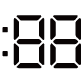

支援 AI DD
水溫：冷水20℃30℃40℃50℃60℃
轉速：800100012001400 rpm
最大量：9 kg
說明：標準程式，適合一般棉麻衣物。
水溫：冷水20℃30℃40℃
轉速：400600800 rpm
最大量：3 kg
說明：柔和洗滌，保護絲質、蕾絲、內衣。
水溫：冷水20℃30℃40℃50℃60℃
轉速：800100012001400 rpm
最大量：9 kg
說明：床單、被套、毛巾等大件衣物。
水溫：冷水20℃30℃40℃
轉速：400600800 rpm
最大量：2 kg
說明：低速擺動避免縮絨，建議羊毛專用洗劑。
支援 AI DD
水溫：40℃50℃60℃
轉速：8001000 rpm
最大量：4 kg
說明：高溫強效，分解頑固污漬。
水溫：冷水20℃30℃40℃
轉速： 800 1000 1200 1400 rpm
最大量：2 kg
說明：30 分鐘快速清洗少量輕污衣物。
支援 AI DD
水溫：冷水20℃30℃40℃50℃60℃
轉速：800100012001400 rpm
最大量：4 kg
說明：適合合成纖維與混紡，減少靜電。
水溫：—
轉速：100012001400 rpm
最大量：6 kg
說明：電子感應控制烘乾，防止過熱。
水溫：冷水20℃30℃40℃50℃60℃
轉速：8001000 rpm
最大量：5 kg
說明：低噪音、低震動設計，適合夜間使用。
水溫：冷水40℃60℃
轉速：100012001400 rpm
最大量：洗 9 kg ➜ 烘 6 kg
說明：一鍵完成洗滌與烘乾，省時省力。
水溫：固定 60℃
轉速：800100012001400 rpm
最大量：4 kg
說明：高溫長時間洗滌，有效去除塵蟎與過敏原。
水溫：—
轉速：—
最大量：—
說明：高溫水流清潔筒槽內壁，抑制霉菌異味。
水溫：固定 60℃
轉速：8001000 rpm
最大量：4 kg
說明：蒸氣滲透纖維，深層去污，適合嬰幼兒衣物。
水溫：依下載程式
轉速：依程式
最大量：依程式
說明：透過 LG ThinQ App 下載專用洗程。